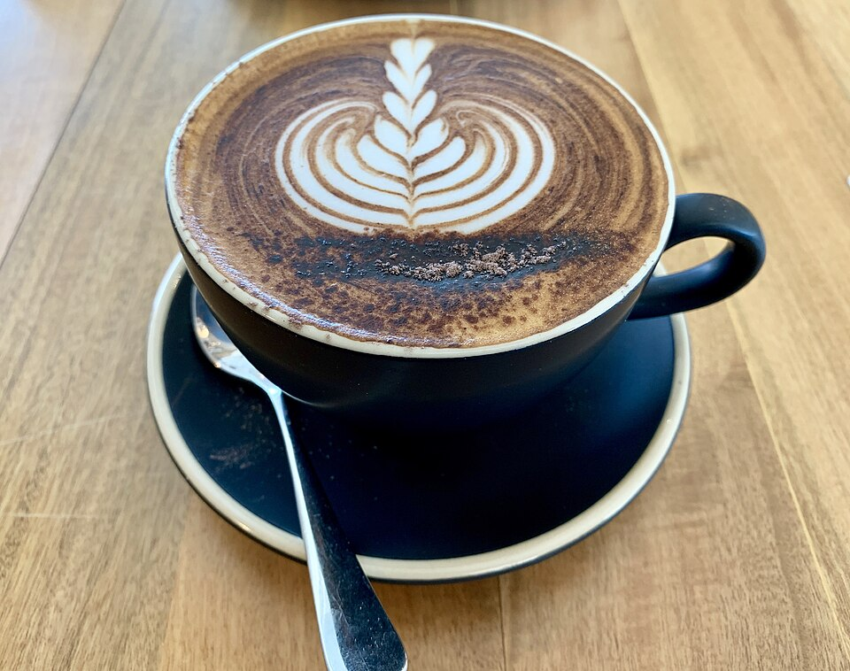

Dialed-In Espresso & Syrups
Partnered with HEX Coffee Roasters, our barista team brews micro-lot pour overs and pulls precision espresso, complemented by house-made seasonal syrups like miso butterscotch and garden rosemary.
Explore Coffee Program →Welcome to Stable Hand, Charlotte's beloved South End gathering space located at 125 Remount Road. In close partnership with HEX Coffee Roasters, we pull dialed-in espresso and craft inventive house-steeped syrups. Beyond the morning cup, our all-day scratch kitchen serves golden brioche breakfast sandwiches, rustic grain bowls, and fresh avocado sourdough toast, flowing effortlessly into natural biodynamic wines and local craft beers.

Uncompromising bean sourcing, from-scratch kitchen prep, and natural low-intervention wines.
Partnered with HEX Coffee Roasters, our barista team brews micro-lot pour overs and pulls precision espresso, complemented by house-made seasonal syrups like miso butterscotch and garden rosemary.
Explore Coffee Program →Our kitchen crafts breakfast sandwiches on toasted brioche with pasture-raised eggs, creamy Carolina Gold rice porridge, fresh lemon curd yogurt bowls, and avocado sourdough toast.
Discover Kitchen Prep →As day transitions to afternoon and evening, explore our rotating bottle and glass list of organic pet-nats, orange skin-contact wines, chilled glou-glou reds, and Carolinian craft beers.
View Wine List →We believe morning fuel should never be an afterthought. Our signature breakfast sandwiches begin with golden butter-toasted brioche, layered with thick-cut applewood smoked bacon or scratch sage pork sausage, a perfectly cooked over-medium farm egg with molten golden yolk, sharp aged cheddar, and house-blended herb aioli.
View Breakfast Menu →

For a lighter or plant-forward start, our avocado sourdough toast features thick rustic bread topped with crushed avocado, sweet blistered cherry tomatoes, freshly shaved pecorino, toasted spices, and farm-fresh poached eggs. Pair with a savory Carolina Gold rice bowl or local Whisk + Wood bakery pastry.
Explore The Kitchen →Whether you are picking up your morning pour-over, catching up with friends over brioche sandwiches, or enjoying a glass of chilled orange wine in the afternoon sun, our doors are open seven days a week.
View Hours, Parking & Location →